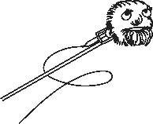

Тренинг
– Ну что, все собрались? Начинаем?
Несколько существ, расположившихся на небольшой полянке, дружно закивали головами. После этого наступила тишина. Никто не решался начать первым.
– Ладно, я начну, пожалуй, – большой кот встал на задние лапы и оглядел всех присутствующих, – как там?.. Здравствуйте, я – кот Баюн, и мне кажется, что у меня проблемы с репертуаром, хотя, на самом деле, мне так не кажется, потому что…
– Баюн! – одернул его рядом сидящий старик. – Нужно говорить о своей кручине, а не начинать себя оправдывать.
– «О своей кручине», – передразнил его кот и фыркнул, – «аз есмь царь» еще скажи!
– Ах, вот ты как заговорил?!
– А что, а что? У меня песни, может, и старые, но еще очень даже красивые! А ты вот…
– Да угомонитесь вы! – Муромец топнул ногой по земле, от чего по поляне прокатилась дрожь. – Мы тут не для того собирались, чтобы вы отношения свои выясняли! Говори, Баюн! И передавай слово.
Кот бросил испепеляющий взгляд на старика и, демонстративно отвернувшись от него, продолжил:
– Я – кот Баюн, здравствуйте. Моя проблема в том, что… Как сказать?.. – Он резко повернулся к старику и зашипел: – Вот сбил меня с мысли совсем! Обязательно было перебивать?
– Да кто тебя сейчас, вообще, трогал? Я молчал, что ты тут наговариваешь?
– Да я прям чувствую, как ты там вылупился на меня своим глазищем и смотришь, смотришь!
– Ну это ты уже перегибаешь, котяра!
– Я сказал – успокойтесь. – Муромец вскочил на ноги и вышел в центр круга. – Что вы как эти самые?.. Баюн, не задерживай очередь!
– Ладно, ладно, – проворчал кот и махнул своим пушистым хвостом, – только пусть он меня не перебивает.
Старик засмеялся, но, увидев яростный взгляд кота, отвернулся в другую сторону. Кот же, немного понаблюдав за ним, снова начал свою речь:
– Здравствуйте, я – кот Баюн. У меня тут такая проблема – за мной постоянно ходит какой-то дед и умничает.
– Не, вы посмотрите на него! – Старик аж поперхнулся от такой наглости. – Это я за ним хожу? Да ты ж сам, как хвост… Верлиока, пойдем на Смородину хлеб жарить. Верлиока, пойдем Яге предложим рентген ноги сделать. Верлиока, пойдем Горыныча водой обольем… Что, не было такого?
Кот сделал большие глаза и, насколько было возможно, незаметно попытался показать старику, чтобы он замолчал.
– Чего-чего? – Баба Яга потерла руки и приподнялась с места.
– Да это мы так шутим, бабуль, – быстро отозвался кот, – в общем… Здрасте, я – Баюн, и я иногда люблю пошутить. Все, следующий кто?
Яга что-то недовольно пробормотала себе под нос, но уселась обратно. Кот пододвинулся к старику и, что-то шепнув ему, покрутил лапой около своего уха.
– Давайте я, что ли, скажу, – огромный змей, сверкнув на солнце чешуей, подполз поближе к центру, – здравствуйте, я – Змей Горыныч.
– Здравствуйте, я – Змей Горыныч.
– Здравствуйте, я…
– Эй, триединый! Может, у тебя кто-нибудь один будет говорить? Вот тот, который посередине, например, – Яга махнула рукой в сторону средней головы.
– А почему это? И вообще, одна голова хорошо, а три лучше. И если у вас нет такой возможности, то это не значит, что мне нельзя высказывать свои мысли.
Яга вздохнула и покачала головой.
– Здравствуйте, я – Змей Горыныч.
– Ладно, все! Змей, мы поняли твою проблему, можешь не объяснять, – выкрикнул Баюн из-за спины Верлиоки.
– Ну как хотите, – хмыкнул Змей, – зачем тогда приглашали только?..
– Давайте я теперь скажу, – Муромец поднялся на ноги. – Здравствуйте! Беда у меня вот какая. Землица наша родненькая, край березок да ивушек…
– О-о-о… Ну это надолго! Верлиока, разбуди меня, как закончит. Эту песню он может круглосуточно петь, – Баюн улегся поудобнее и накрыл уши хвостом.
– А чего тебе не нравится? Он о родине своей беспокоится, а не только как ты – поесть да поспать, – поднял одну из голов Горыныч.
– Ой, вот не надо только, – скривился Баюн, – я в прошлой битве вместе со всеми ее защищал, вообще-то.
– Ну и ладно, не хотите слушать, как хотите, – Муромец сел обратно, достал из ножен меч и принялся полировать лезвие тряпочкой, которую он достал из кармана, – что тогда, вообще, собирались? Никому ничего не надо… Яга, будешь говорить?
– Ну давайте и я скажу. Здравствуйте, я – Яга, и мне не нравится, что меня называют Бабой.
– Ну вот, хоть одна нормальная проблема, – подал голос Баюн, – кому что, а женщинам главное – возраст.
– Илюш, а ну дай-ка свой ножичек, – Яга протянула руку и выразительно посмотрела на Кота.
– Кажись, мышь побежала! – Кот навострил уши и прыгнул в заросли травы.
– Вот такая вот у меня проблема. Кто там следующий? – Яга опустила руку и села на землю.
– Здравствуйте, я – Верлиока. У меня тут такое дело… Ходит за мной постоянно один экземпляр и слишком много разговаривает.
– А вот не надо тут брехать, – послышалось из кустов, – мы эту тему уже обсудили, вообще-то!
– Да кто из нас еще брешет?
– Я не буду показывать пальцем, потому что у меня он не очень показательный.
– Какой? – не оборачиваясь, переспросил Верлиока.
– Что ты к словам цепляешься? Ты ж понял, о чем я?
– Ничего я не понял. Что за показательный палец?
– Так! Все, хватит! – Муромец резким движением вставил меч в ножны и посмотрел на окружающих: – Ничего у нас не получается с этими… как они там называются?
– Тренинги, – напомнил Верлиока.
– Вот-вот. С ними самыми.
– А я сразу сказал, что затея глупая, – выглянул из зарослей Баюн, – хотите, объясню почему? Потому что каждый из нас – это индивидуальность. Со своими проблемами, не очень хорошими характерами, с особенностями своими… И люди такие же, на самом деле. Только вот они не хотят понимать, что в этом и есть красота. Им нужно всех подогнать под одну гребенку. Всех сделать похожими друг на друга. А если не такой, как они, то иди отсюда и не появляйся на глаза. Ты не вписываешься в их представления, – кот осмотрел окружающих и продолжил: – Вот я, действительно, много говорю и не по делу, может быть. Но я такой, какой есть. Разве это плохо?
– А я, честно говоря, уже привыкла, что меня Бабой называют. Даже нравится, – откликнулась Яга.
– А нам втроем не скучно зато, – подал голос Горыныч.
– Ну а я горжусь тем, что Русь-матушку люблю, – улыбнулся Муромец.
– А я без этого балбеса уже и жизнь свою не представляю, – сказал Верлиока и почесал Баюна за ухом, – так что, Домовик, отнеси ты эти книжки обратно Лекарю. Он парень хороший, но вот все его вот эти человеческие уловки и тренинги… Они нам ни к чему. Мы научились уважать друг друга, независимо от похожести или различия. Чего и людям желаем. Передавай ему привет там!
Верлиока достал из сумки книги и передал Домовому.
– Да он их уже не читает, – улыбнулся тот, – это я их в кладовке нашел, валялись там… Он теперь по-другому людей лечит от хворей душевных. Про вас рассказывает.
Домовой протянул Верлиоке папку с чердака.
– Про нас? И что, помогает?
– Еще как, братцы, еще как…
...